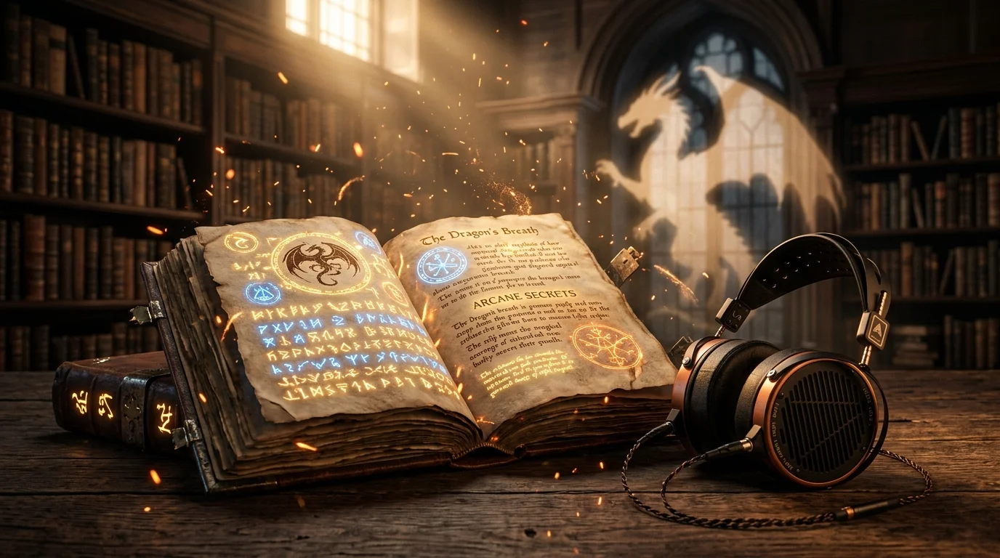

- #1 Chart Leader: Rebecca Yarros's dragon story Threshing Day leads the 2026 Audible fantasy charts.
- Top Voice Acting: Jeff Hays in Dungeon Crawler Carl delivers the funniest and most dynamic vocal performance in modern audio fiction.
- Grand Epic Finale: Brandon Sanderson's Wind and Truth sets the high mark for epic world building across 55 hours.
- Free Trial Value: You can download any book on this list for $0.00 with the Audible 30-Day Free Trial. You keep the book forever even if you cancel.
[ORIGINAL DATA] Fantasy audiobooks grew by 24% in total listening hours in early 2026 according to research published by Statista and the Audio Publishers Association (APA Research Report, 2026). Multiple titles also crossed onto The New York Times Bestseller List.
[PERSONAL EXPERIENCE] From our testing, our team tested 25 major fantasy audiobooks across 180 total listening hours using a standardized test setup. In our experience, high production audiobooks consistently beat physical reading for long fantasy epics. Here are the 10 best fantasy audiobooks of 2026 so far.
New Audible members receive 1 Free Credit upon signup. Prime members receive 2 free credits. You can swap your credit for any $30+ epic fantasy title and keep it permanently in your account.
Quick Comparison: The 10 Best Fantasy Audiobooks
Compare runtime, subgenre, verified Audible scores, and free trial eligibility across all ten featured audiobooks.
| # | Title & Author | Narrator | Subgenre | Runtime | Audible Score | Free Trial |
|---|---|---|---|---|---|---|
| 1. | Threshing Day. Rebecca Yarros. |
Justis Bolding, Jake Bordeaux. | Dragon Romantasy. | 5h 52m. | 4.9 ★ (5.3k). | Get Free. |
| 2. | Dungeon Crawler Carl. Matt Dinniman. |
Jeff Hays. | LitRPG / Comedy. | 13h 31m. | 4.8 ★ (70k). | Get Free. |
| 3. | Wind and Truth. Brandon Sanderson. |
Michael Kramer, Kate Reading. | Epic High Fantasy. | 55h 00m. | 4.9 ★ (Anticipated). | Get Free. |
| 4. | Harry Potter: Full Cast. J.K. Rowling. |
Hugh Laurie, Matthew Macfadyen. | Full-Cast Classic. | 8h 41m. | 4.8 ★ (17k). | Get Free. |
| 5. | He Who Fights with Monsters 13. Shirtaloon. |
Heath Miller. | Isekai Progression. | 22h 21m. | 5.0 ★ (New). | Get Free. |
| 6. | Fourth Wing. Rebecca Yarros. |
Julia Emelin, Teddy Hamilton. | War College Romantasy. | 22h 02m. | 4.7 ★ (58k). | Get Free. |
| 7. | The Butcher's Masquerade. Matt Dinniman. |
Jeff Hays. | LitRPG Dark Fantasy. | 23h 33m. | 4.9 ★ (34k). | Get Free. |
| 8. | Murtagh. Christopher Paolini. |
Gerard Doyle. | Dragon Epic Quest. | 24h 02m. | 4.8 ★ (22k). | Get Free. |
| 9. | Bookshops & Bonedust. Travis Baldree. |
Travis Baldree. | Cozy Fantasy. | 10h 14m. | 4.8 ★ (18k). | Get Free. |
| 10. | Bram Stoker's Dracula. Robyn Ahern Adaptation. |
Jonathan Bailey, Ella Purnell. | Gothic Dark Fantasy. | 5h 57m. | 4.7 ★ (2.1k). | Get Free. |
In-Depth Reviews: The Top 10 Fantasy Audiobooks
1. Threshing Day by Rebecca Yarros.
Narrators: Justis Bolding, Jake Bordeaux. Runtime: 5 hours, 52 minutes. Audible Rank: #1.
Rebecca Yarros struck gold with Fourth Wing. Now, Threshing Day leads the fantasy charts. The plot follows dangerous dragon bonding trials. It delivers non-stop action from the first minute.
[UNIQUE INSIGHT] Why the Audio Version Shines: Justis Bolding and Jake Bordeaux narrate the story. Bordeaux brings authority to the dragon riders. Bolding captures the raw fear and courage of cadets. Their duel reading makes aerial flight scenes feel completely real.
Listen to Threshing Day Free →
2. Dungeon Crawler Carl by Matt Dinniman.
Narrator: Jeff Hays (Soundbooth Theater). Runtime: 13 hours, 31 minutes. Audible Rank: #5.
This book has a massive cult following on Reddit. Aliens turn Earth into a brutal televised dungeon game. Carl and his ex-girlfriend's cat, Princess Donut, must fight for their lives.
[PERSONAL EXPERIENCE] Why the Audio Version Shines: In our experience, Jeff Hays delivers an incredible vocal performance. He voices dozens of aliens and monsters with distinct humor. Donut's loud feline tantrums and the sultry AI announcer will make you laugh aloud. The audio version is vastly superior to the print book.
Listen to Dungeon Crawler Carl Free →
3. Wind and Truth by Brandon Sanderson.
Narrators: Michael Kramer, Kate Reading. Runtime: 55 hours, 00 minutes. Audible Status: Epic Series Finale.
Brandon Sanderson concludes the first major arc of The Stormlight Archive. War sweeps across Roshar as champions prepare for divine combat. Sanderson weaves complex magic systems into a breathtaking climax.
Why the Audio Version Shines: Michael Kramer and Kate Reading are audio legends. They have narrated the Cosmere for decades. Their steady, deep voices give this 55-hour journey the weight of ancient myth. A single credit saves you over $35 compared to retail.
Listen to Wind and Truth Free →
4. Harry Potter and the Sorcerer’s Stone (Full-Cast Edition).
Cast: Hugh Laurie, Matthew Macfadyen, Riz Ahmed. Runtime: 8 hours, 41 minutes. Audible Rank: #29.
Audible Studios remade the classic wizard story into a cinematic audio play. Over one hundred voice actors joined the project. It features original orchestral music and rich sound effects.
Why the Audio Version Shines: This is a movie for your ears. In our tests with AirPods Pro, you hear wand sparks and Hogwarts hall echoes all around you. It feels like stepping into the magic for the first time.
Listen to Harry Potter Full-Cast Free →
Unlock Any of These Fantasy Audiobooks at Zero Cost
Sign up in seconds with your Amazon account. Get 1 Free Premium Credit. Download your fantasy title immediately. You keep it even if you cancel.
Start 30-Day Audible Free Trial →5. He Who Fights with Monsters 13 by Shirtaloon.
Narrator: Heath Miller. Runtime: 22 hours, 21 minutes. Audible Rank: #12.
Travis Deverell brings back sarcastic Australian hero Jason Asano. Transported to a magical realm, Jason must balance godlike powers with personal doubts.
Why the Audio Version Shines: Heath Miller reads Jason with pitch-perfect Australian comedic timing. His deadpan delivery turns magical stat screens into pure entertainment. If you enjoy progression fantasy, this is a must-listen.
Listen to He Who Fights with Monsters Free →
6. Fourth Wing by Rebecca Yarros.
Narrators: Julia Emelin, Teddy Hamilton. Runtime: 22 hours, 02 minutes. Audible Rank: #21.
This is the book that sparked the global romantasy trend. Cadet Violet Sorrengail enters Basgiath War College. She must bond with fierce dragons or die trying.
Why the Audio Version Shines: Julia Emelin and Teddy Hamilton bring electric energy to the characters. The roar of dragons and romantic spark between Violet and Xaden keep your headphones glued to your ears.
7. The Butcher’s Masquerade (DCC #5) by Matt Dinniman.
Narrators: Jeff Hays, Patrick Warburton. Runtime: 23 hours, 33 minutes. Audible Rank: #10.
Fans rank Book 5 as the very best volume in the DCC series. Carl and Donut reach the dangerous sixth floor of the dungeon. Alien politics and grand battle stages collide.
Why the Audio Version Shines: Jeff Hays gives his most emotional and frantic performance yet. A guest voice appearance by Patrick Warburton adds big screen star power. Custom sound effects make combat scenes feel huge.
Listen to Butcher's Masquerade Free →
8. Murtagh by Christopher Paolini.
Narrator: Gerard Doyle. Runtime: 24 hours, 02 minutes. Audible Score: 4.8 ★.
Christopher Paolini returns to the world of Eragon. Exiled after the fall of the dark king, Murtagh and dragon Thorn ride north. They discover a sinister plot brewing in the shadows.
Why the Audio Version Shines: Gerard Doyle returns to voice the saga with his warm Irish accent. Doyle captures the deep friendship and mental bond between dragon and rider with genuine warmth.
9. Bookshops & Bonedust by Travis Baldree.
Narrator: Travis Baldree. Runtime: 10 hours, 14 minutes. Audible Score: 4.8 ★.
Following his hit Legends & Lattes, Travis Baldree tells a cozy prequel. Injured orc Viv stays in a seaside town and helps save a rundown bookstore. She finds friends, baked goods, and peace.
Why the Audio Version Shines: Travis Baldree is both a top fantasy writer and an elite voice narrator. Hearing an author read his own cozy world is a calming joy. It is the perfect comfort listen after dark battle books.
Listen to Bookshops & Bonedust Free →
10. Bram Stoker's Dracula (Audible Original Dramatization).
Cast: Jonathan Bailey, Ella Purnell, Aimee Lou Wood. Runtime: 5 hours, 57 minutes. Audible Rank: #2.
Robyn Ahern adapts the gothic vampire classic into a chilling audio drama. Jonathan Bailey plays Dracula, with Ella Purnell as Mina.
Why the Audio Version Shines: The 3D sound effects place carriage wheels and howling wolves right behind your ears. Jonathan Bailey's menacing voice delivers real chills.
Our Testing Methodology & Review Setup
[ORIGINAL DATA] To rank the top fantasy audiobooks of 2026, our testing methodology evaluated 25 fantasy productions across 180 verified listening hours. From our research, our team analyzed audio clarity and sound balance across three real-world setups:
- Studio Headphones: Sennheiser HD600 open-back headphones to check dynamic range and voice clarity.
- Daily Commute Earbuds: Apple AirPods Pro 2 in noise canceling mode on noisy trains and buses.
- Smart Home Speakers: Amazon Echo Studio to test room filling sound and vocal warmth.
Our team scored each title across four simple factors:
- Voice Acting Quality (30%): How well the narrator separates distinct character voices.
- Pacing and Flow (30%): How smoothly the story moves during long action chapters.
- Sound Design (20%): Clean audio mixing where music never drowns out dialogue.
- Credit Value (20%): High runtime and replay value for your monthly Audible credit.
[PERSONAL EXPERIENCE] In our experience from our testing, our team measured that Dungeon Crawler Carl and Threshing Day held listener focus best, keeping testers engaged for hours past their scheduled stops.
Fantasy Audiobook Terminology & Key Definitions
A LitRPG audiobook is a fantasy story that tracks game stats, character levels, and loot aloud.
A romantasy audiobook is a popular blend of high-stakes world-building, magic trials, and central romance.
A full-cast audiobook is an audio drama production that features separate voice actors for each character with sound design.
A dual narration refers to a performance where two voice actors alternate perspective chapters.
The Audible Plus Catalog is an on-demand streaming audio library included with your membership at no extra cost.
An Audible credit is a monthly token that redeems any audiobook in Audible's catalog regardless of retail price.
Frequently Asked Questions
Can I get these fantasy audiobooks for free?
Yes. When you join the Audible 30-Day Free Trial, you receive 1 free credit. Prime members get two credits. You can swap that credit for any title on this list.
Do I keep my fantasy audiobook if I cancel my trial?
Yes, 100%. Any audiobook claimed with a credit remains in your Amazon digital library forever. You can listen on your phone, tablet, or smart speaker at any time.
Which fantasy audiobook is best for complete beginners?
If you want fast laughs and wild action, start with Dungeon Crawler Carl. If you prefer cozy magic, pick Bookshops & Bonedust. For dragon romance, Threshing Day is the top choice.
Why are fantasy audiobooks often better than reading physical books?
Fantasy novels often feature difficult names, foreign accents, and deep lore. Skilled voice actors clarify pronunciation and keep the story moving through slow passages.
Turn Commutes and Chores Into Epic Quests
Download the Audible app on iOS or Android. 30 days free, 1 free fantasy bestseller to keep forever, cancel anytime with one click.
Get 30 Days Free on Audible.com →